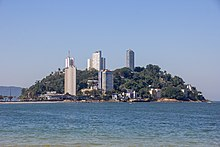
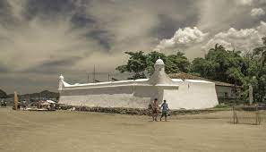
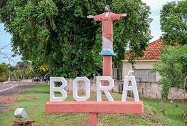

Curiosidades do Estado de São Paulo

Curiosidade 1
A cidade mais antiga do Brasil é São Vicente, no litoral paulista. A expedição portuguesa de Gaspar de Lemos chegou à Ilha de Gohayó no dia 22/01/1502 e, por ser dia de São Sebastião, passou a chamar o local pelo nome do santo.

Curiosidade 2
O Forte São João de Bertioga foi construído em 1547 com uma argamassa de óleo de baleia. Usaram o equivalente a 400 baleias para levantar a grossa muralha, capaz de resistir ao impacto de balas de grosso calibre.

Curiosidade 3
A maior e a menor cidade do Brasil ficam em São Paulo. A maior é a capital paulista. A menor é Borá, no interior do estado. Lá moram 834 pessoas, população cinco vezes menor do que a que habita o edifício Copan.